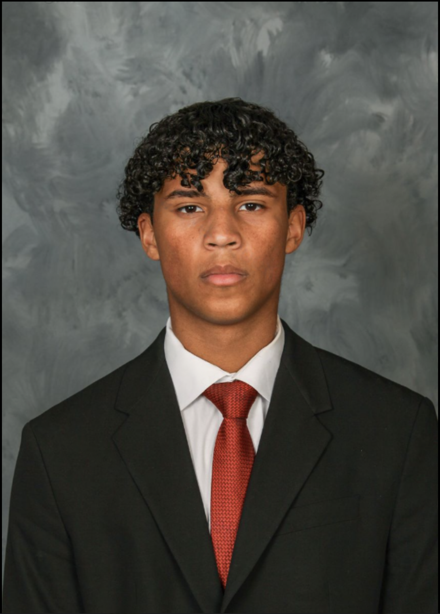

Accounting Analyst · WebBank
- Prepare bank reconciliations and identify discrepancies to support accurate financial records.
- Monitor and maintain financial records for three partners.
- Prepare journal entries for various accounting activities.

Accounting · Rutgers Business School
I am a Rutgers accounting student and part-time Accounting Analyst at WebBank, building experience in reconciliations, journal entries, and financial reporting as I work toward a career in accounting.
I am pursuing a Bachelor of Science in Accounting at Rutgers Business School–New Brunswick, with an expected graduation in Fall 2027. I plan to complete 150 credits as part of my preparation for the CPA licensure process.
At WebBank, I support accounting operations through bank reconciliations, journal entry preparation, and monitoring financial records for three partners. My interests include accounting, internal audit, and financial analysis.
Outside of work and classes, I participate in Rutgers Men’s Club Soccer, the Rutgers University Accounting Association, and ALPFA.
Intermediate Accounting Coursework
Contributed to an analysis of McDonald’s financial position, focusing on operating liabilities and contingencies. Examined accounts payable, leases, accrued expenses, and potential obligations to consider their effects on liquidity.
Skills: Financial statement analysis, research, and team presentation.
View McDonald’s Project (PDF)Educational Job Simulation
Completed an educational simulation exploring internal audit, including identifying risks, evaluating controls, and considering monitoring activities. This was a learning experience, not employment at Goldman Sachs.
Skills: Risk identification, internal controls, and analytical thinking.
View Goldman Sachs Project Materials (PDF)WebBank · Accounting Experience
Perform daily reconciliations by comparing bank balances and internal spreadsheets with bank transaction reports and balance statements. Investigate missing entries, outstanding checks, fees, and timing differences, then prepare and post journal entries with supporting documentation as needed.
Skills: Bank reconciliation, transaction research, journal entries, and documentation.
View Experience Summary (PDF)I am interested in opportunities to develop my accounting, audit, and financial analysis experience.